그래프 그리기 — plot
- MATLAB의 그래프는 어떤 데이터에서 그려지나? 「함수를 그린다」는 것은 정확히 무엇인가?
- 두 번째
plot을 쳤더니 첫 그래프가 사라졌다. 왜 그런가, 어떻게 겹쳐 그리나? - 제동비 \(\zeta\)를 바꾸면 2차 시스템의 계단응답은 어떻게 달라지나? 식으로 직접 그려 확인할 수 있나?
- 그래프에서 눈으로 읽는 「최대초과」를 숫자로 뽑으려면?
- 보고서에 넣을 그림 파일은 어떻게 저장하나?
2회에서 숫자·행렬·다항식을 계산했다. 제어공학에서 계산 결과는 대부분 그래프로 읽는다 —
계단응답이 얼마나 출렁이는지, 근궤적이 어느 쪽으로 휘는지, 보드 선도가 어디서 꺾이는지.
오늘은 그래프를 그리는 함수 plot과 그 서식을 익힌다.
plot 기본, 그래프 서식, 그림 창 관리, 창 나누기를 순서대로 익힌 뒤,
그 도구로 2차 시스템의 계단응답 식을 직접 그려 본다. 4회에서 step 함수가 그려 줄 그래프를
오늘은 교재의 식으로 먼저 그려 보는 것이다. 그래야 4회에 step이 무엇을 대신 해 주는지가 보인다.
한 장 요약
가운데 열의 동작을 기억하면 된다. 오른쪽 열은 그 함수를 4회 이후 어디서 다시 쓰는지다.
| 함수 | 하는 일 | 제어공학에서 쓰는 자리 |
|---|---|---|
plot(x, y, '스타일') | 점 (x, y)들을 이어 그린다 | 응답 곡선 \(y(t)\), 극점 위치('x' 표시) |
title · xlabel · ylabel · legend · grid | 제목·축 이름·범례·눈금선 | 입력과 응답을 구별하는 범례, 보고서용 서식 |
axis([x1 x2 y1 y2]) | 보이는 범위 지정 | 근궤적을 관심 영역으로 확대 |
hold on / hold off | 겹쳐 그리기 켜기/끄기 | 근궤적 위에 성능 경계선 겹치기 (6·7회) |
figure · subplot(m,n,k) | 새 창 / 한 창을 m×n 칸으로 | 보드 선도의 이득·위상 두 칸 (8회) |
for k = 1:n … end | 같은 일을 n번 반복 | 제동비·이득을 바꿔 가며 곡선 여러 개 |
max | 가장 큰 값과 그 위치 | 최대초과·첨두시간을 숫자로 |
exportgraphics | 그림 창을 파일로 저장 | 과제 보고서 |
hold on은 6·7회에서 근궤적 위에 선을 겹쳐 그리는 코드의 뼈대이고,
subplot은 5회 근궤적 예제 네 개를 한 창에 모으는 데 쓴다.① 데이터 준비 — 시간 축과 함수값
MATLAB의 plot은 수식을 그리지 않는다. 점들의 좌표를 받아 그 점들을 선으로 잇는다.
그래서 「\(\cos x\)를 그린다」는 것은 정확히 말하면 x 값 여러 개를 만들고, 각 x에서 \(\cos x\)를 계산한 뒤, 그 점들을 잇는 것이다.
먼저 그 점들을 준비한다.
% 작업공간에 있는 모든 데이터 날리기
clc; clear; close all
x = 0:0.1:10;
y1 = cos(x);
y2 = exp(-x);
size(x)
x(1:5)
y2(1:5)명령 창 출력
ans =
1 101
ans =
0 0.1000 0.2000 0.3000 0.4000
ans =
1.0000 0.9048 0.8187 0.7408 0.6703
x = 0:0.1:10은 2회의 콜론 연산자로 0부터 10까지 0.1 간격의 점 101개를 만든다(size(x)가 1×101).
cos(x)와 exp(-x)는 벡터를 받으면 원소마다 계산해서 같은 크기의 벡터를 돌려준다.
그래서 y2(1:5)는 \(e^{0}, e^{-0.1}, e^{-0.2}, \ldots\) = 1.0000, 0.9048, 0.8187 …이다.
x = 0:0.1:10 끝에 세미콜론을 빼면 101개 숫자가 명령 창을 한참 채운다.
벡터를 만드는 줄에는 ;를 붙이고, 확인하고 싶으면 위처럼 앞쪽 몇 개만 꺼내 본다.
점 간격이 그래프의 매끄러움을 정한다. 간격 0.1이면 \(\cos x\) 한 주기(약 6.3)에 점이 60개 남짓이라 충분히 매끄럽다.
간격을 1로 하면 꺾은선처럼 보인다. 응답 곡선을 그릴 때 시간 간격 0.01을 자주 쓰는 이유다.
② 선 그래프 — plot
plot(x, y)는 같은 길이의 벡터 둘을 받아 (x(1), y(1)), (x(2), y(2)), … 를 차례로 잇는다.
각 줄이 무엇을 그리는지 보이려고 한 줄씩 돌려 본다.
% cos(x) 그리기
plot(x, y1)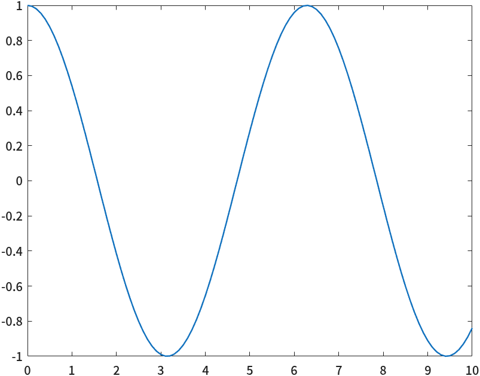
plot(x, y1) — 101개 점을 이은 \(\cos x\). 색을 정하지 않으면 MATLAB이 파란색부터 고른다.% cos(x), exp(-x) 동시에 그리기
plot(x, y1, x, y2)
plot(x1, y1, x2, y2)처럼 (x, y) 쌍을 이어서 적으면 한 번에 여러 곡선이 그려진다.
두 번째 곡선은 자동으로 다른 색(주황)이 된다.
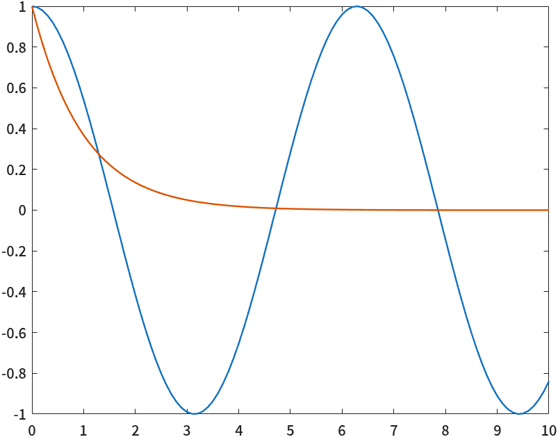
plot(x, y1, x, y2) — 진동하는 \(\cos x\)(파랑)와 줄어드는 \(e^{-x}\)(주황). ⑥절의 계단응답 식이 바로 이 둘의 곱 모양이다.선 스타일 지정자 — 'r.' · 'k--'
각 (x, y) 쌍 뒤에 글자 몇 개로 된 선 스타일 지정자(line spec)를 붙이면 색·표시·선 모양을 고를 수 있다.
% cos(x) 는 빨간 점으로 그리고 exp(-x)는 검은 점선으로 그리기
plot(x, y1, 'r.', x, y2, 'k--')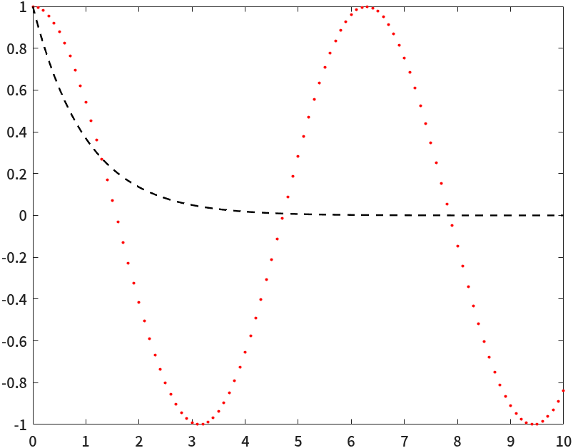
'r.'은 빨강(r) 점(.)만 찍고 선은 긋지 않는다. 'k--'는 검정(k) 파선(--)이다.| 종류 | 글자 | 뜻 |
|---|---|---|
| 색 | r g b k m c y w | 빨강 초록 파랑 검정(k) 자홍 청록 노랑 흰색 |
| 선 모양 | - -- : -. | 실선, 파선, 점선, 일점쇄선 |
| 점 표시 | . o x + * s d | 점, 원, 가위표, 더하기, 별, 사각형, 마름모 |
'b-', 'ro', 'g--', 'rd'.
검정이 b가 아니라 k인 것은 b를 파랑(blue)이 이미 차지했기 때문이다.
점 표시만 있고 선 모양이 없으면 선을 긋지 않는다 — 극점을 'x'로 찍을 때 이 성질을 쓴다.
7회의 plot(pole_real, pole_imag, 'rd')는 목표 극점을 빨간 마름모 하나로 찍는 줄이다.🆕 이 코드에서 처음 나오는 것
- plot(x, y) · plot(x1, y1, x2, y2, …)
- 같은 길이의 벡터 x, y의 점들을 잇는다. 쌍을 이어 적으면 곡선 여러 개. 여기서는 \(\cos x\)와 \(e^{-x}\)를 그렸다.
- plot(x, y, '스타일')
- 색·선·점 표시를 글자로 지정. 여기서는
'r.'(빨간 점)과'k--'(검은 파선)을 썼다.
③ 그래프 서식 — title · xlabel · axis · text · legend
선만 있는 그래프는 남이 읽을 수 없다. 가로축이 시간인지 주파수인지, 어느 선이 입력이고 어느 선이 응답인지 적어 줘야 한다.
아래 코드는 서식 함수 다섯 개를 한 번에 쓰고, 끝에 grid on으로 눈금선을 켠다 — 값을 눈으로 읽을 때 눈금선이 있으면 훨씬 편하다.
clc; clear
% 모든 figure 창 닫기
close all
x = 0:0.1:10;
y1 = cos(x);
y2 = exp(-x);
% cos(x) 는 빨간 점으로 그리고 exp(-x)는 검은 점선으로 그리기
plot(x, y1, 'r.', x, y2, 'k--')
% 그래프 속성 표시
% 그래프 위에 제목 붙이기
title('Control Engineering')
% x, y축 이름 붙이기
xlabel('time')
ylabel('function')
% 그래프 영역 지정
axis([0 pi*3 -1.5 1.5])
% 그래프 안에 텍스트 표시
text(2, 1, 'text 함수를 이용한 텍스트 표시')
% 그래프 각 선에 대한 라벨 표시
legend('cos(x)', 'exp(-x)')
% 눈금선 켜기
grid on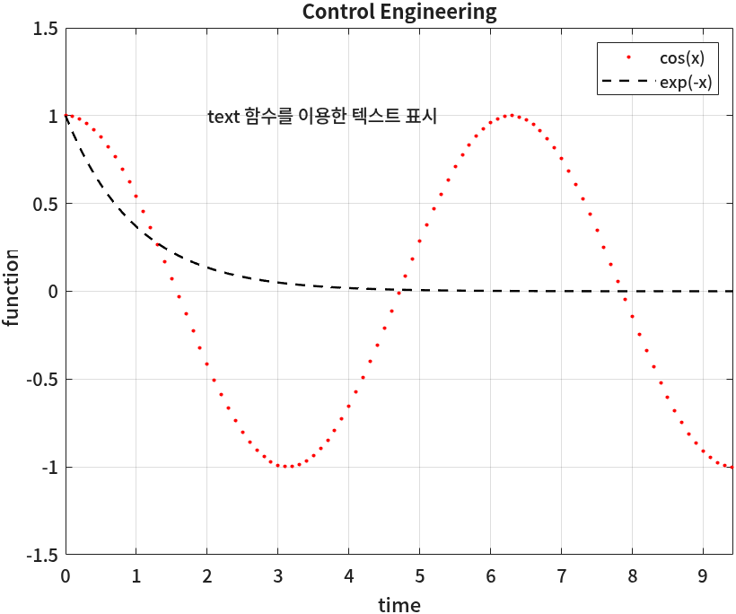
axis의 효과다.
axis([0 pi*3 -1.5 1.5])의 네 숫자는 [가로 최소 가로 최대 세로 최소 세로 최대]다.
데이터는 10까지 있지만 화면에는 \(3\pi\)까지만 보인다 — 데이터를 자르는 것이 아니라 보는 창을 옮기는 것이다.
5회 근궤적에서 axis([-12 2 -7 7])로 관심 있는 영역만 보여 주는 것이 같은 원리다.
text(2, 1, '…')는 데이터 좌표 (2, 1)에 글자를 쓴다. 화면 픽셀 위치가 아니라 축 눈금 기준이다.
legend에 주는 이름은 곡선을 그린 순서대로 붙는다 — 첫 이름이 첫 곡선(y1)이다.
🆕 이 코드에서 처음 나오는 것
- title('…') · xlabel('…') · ylabel('…')
- 제목과 축 이름. 여기서는 「Control Engineering」, 「time」, 「function」을 달았다.
- axis([xmin xmax ymin ymax])
- 보이는 범위를 정한다. 여기서는 가로 0~\(3\pi\), 세로 −1.5~1.5만 보이게 했다.
- text(x, y, '…')
- 데이터 좌표 (x, y)에 글자를 쓴다. 여기서는 (2, 1)에 한글 문장을 넣었다.
- legend('이름1', '이름2', …)
- 범례. 이름은 그린 순서대로 곡선에 붙는다. 여기서는 빨간 점에 cos(x), 검은 파선에 exp(−x).
- grid on
- 눈금선을 켠다(
grid off로 끈다). 인자 없이grid만 쓰면 켜고 끄기를 번갈아 한다.
④ 그림 창 관리 — hold on · hold off · figure
②절에서는 곡선 두 개를 한 번의 plot으로 그렸다. 그런데 곡선을 따로따로, 계산하는 대로 하나씩 그리고 싶을 때가 많다.
그냥 plot을 두 번 치면 어떻게 될까? 단계별로 확인해 본다. 아래 세 상자는 같은 그림 창을 이어서 쓴다.
clc; clear
% 모든 figure 창 닫기
close all
x = 0:0.1:10;
y1 = cos(x);
y2 = exp(-x);
% 그래프를 따로 그리면 기존 그래프를 없애고 새로 그리게 됨
plot(x, y1)
title('figure1')
plot(x, y2)
title('figure1 again')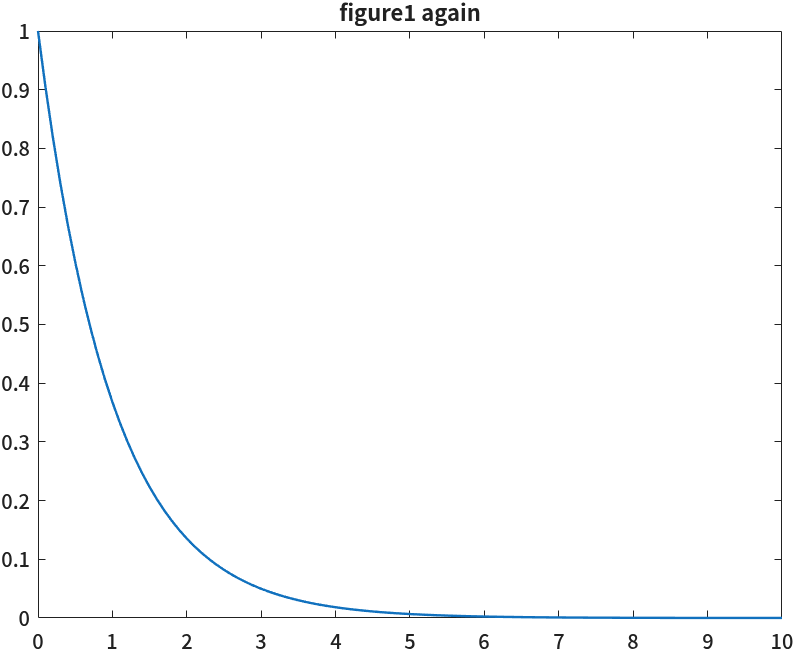
plot의 \(e^{-x}\) 하나뿐이다. 제목도 두 번째 title이다. 첫 그래프는 지워졌다.
기본 상태에서 plot은 그림을 지우고 새로 그린다. 겹쳐 그리려면 hold on으로 「지우지 말고 잡고 있어라」라고 알려야 한다.
% 기존 그래프 위에 새 그래프를 그리려면 hold on
plot(x, y1)
hold on
plot(x, y2)
title('figure1 hold on')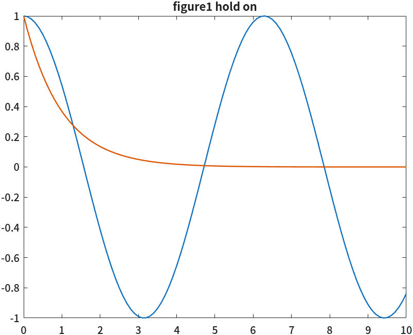
hold on 뒤의 두 번째 곡선이 첫 곡선 위에 겹쳐졌다. 색도 자동으로 바뀌었다.
다 그렸으면 hold off로 되돌린다. 그러지 않으면 다음에 그리는 엉뚱한 그래프까지 계속 겹쳐 쌓인다.
다음 상자는 hold off 뒤에 새로 그리고, figure로 새 창을 연다.
% 기존 그래프를 지우고 새 그래프를 그리려면 hold off
hold off
plot(x, y1)
title('figure1 new plot')
% 새창에 y2 그리려면 figure 함수 이용
figure
plot(x, y2)
title('another figure')
% figure 번호를 명시적으로 지정 가능
figure(2)
plot(x, y2)
title('figure2')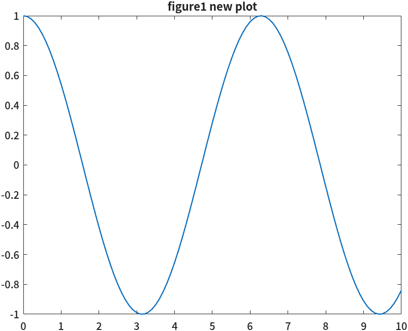
hold off 뒤의 plot이 겹쳐 있던 두 곡선을 지우고 \(\cos x\)만 새로 그렸다.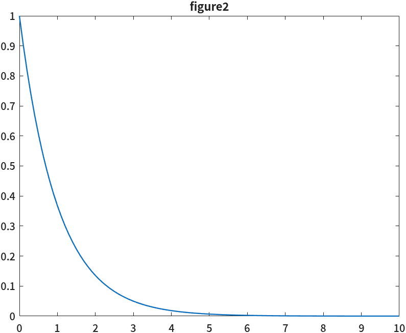
figure가 새로 연 창이 2번이었고, figure(2)는 그 2번 창을 다시 골라 그 위에 덮어 그렸다.
figure를 인자 없이 쓰면 다음 번호의 새 창을 연다. figure(n)은 n번 창이 있으면 그 창을 고르고(없으면 만든다).
이후의 plot·title은 지금 골라져 있는 창, 즉 현재 그림 창(current figure)에 그려진다.
결과적으로 창은 둘이고, 「another figure」는 같은 창의 「figure2」로 덮였다.
⚠️ hold on을 걸어 둔 채로 다음 실습을 시작하면
스크립트를 여러 번 고쳐 실행하다 보면 지난번 곡선 위에 이번 곡선이 쌓여 그래프가 점점 지저분해진다.
그래서 스크립트를 clc; clear; close all로 시작하는 경우가 많다. close all은 열려 있는 그림 창을 모두 닫는다 —
스크립트를 시작할 때 이 세 개를 두면 명령 창·작업공간·그림 창이 모두 깨끗한 상태에서 출발한다.
🆕 이 코드에서 처음 나오는 것
- hold on · hold off
- 현재 축에 겹쳐 그리기를 켜고 끈다. 여기서는 \(\cos x\) 위에 \(e^{-x}\)를 겹쳤다가, 끈 뒤 새로 그렸다.
- figure · figure(n)
- 새 그림 창을 열거나, n번 창을 현재 창으로 고른다. 여기서는 두 번째 창을 열고 다시 골랐다.
⑤ 창 나누기 — subplot
그래프 여러 개를 한 창 안에 바둑판처럼 놓고 비교하고 싶을 때 subplot(m, n, k)를 쓴다.
창을 m행 n열로 나누고 그중 k번째 칸을 현재 축으로 고른다. 칸 번호는 왼쪽 위에서 오른쪽으로, 그다음 줄로 센다.
clc; clear;
% 모든 figure 창 닫기
close all
% 데이터 준비
x = 0:0.1:10;
y1 = cos(x);
y2 = sin(x);
y3 = exp(-x);
y4 = log(x);
subplot(2,2,1)
plot(x, y1)
title('cosine')
subplot(2,2,2)
plot(x, y2)
title('sine')
subplot(2,2,3)
plot(x, y3)
title('exponential')
subplot(2,2,4)
plot(x, y4)
title('log')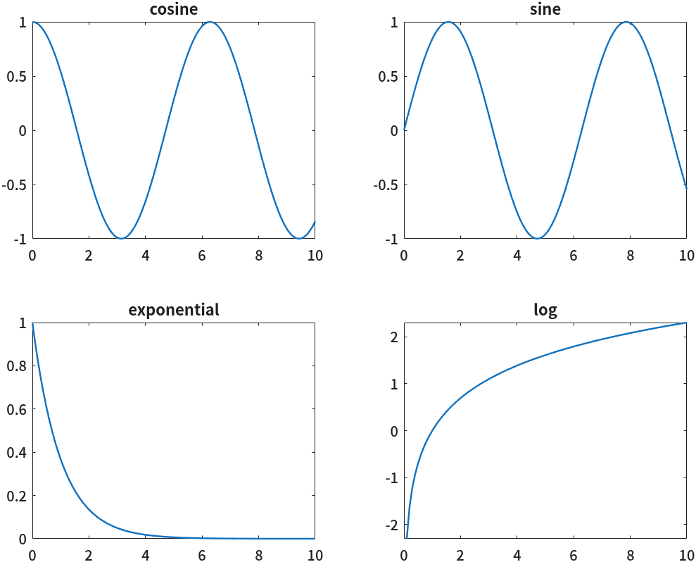
subplot을 부른 다음의 plot과 title은 그 칸에만 적용된다. 그래서 「칸 고르기 → 그리기 → 제목」 세 줄이 한 묶음으로 네 번 되풀이된다.
5회에서 근궤적 네 개를 subplot(2,2,k)로 한 창에 모아 「영점을 추가하면 모양이 어떻게 바뀌나」를 비교한다.
오른쪽 아래 log 그래프는 x = 0에서 시작하지 않는 것처럼 보인다. 첫 값을 확인해 본다.
y4(1:3)명령 창 출력
ans =
-Inf -2.3026 -1.6094
\(\ln 0 = -\infty\)라서 첫 값이 -Inf다. plot은 무한대인 점을 오류 없이 건너뛰고 나머지만 잇는다.
그래프가 이상하게 비어 있으면 데이터에 Inf나 NaN(정의되지 않은 값)이 섞였는지 의심해 볼 만하다.
🆕 이 코드에서 처음 나오는 것
- subplot(m, n, k)
- 창을 m×n 칸으로 나누고 k번째 칸을 고른다. 여기서는 2×2 네 칸에 함수 넷을 그렸다.
- -Inf
- 음의 무한대. 여기서는
log(0)의 결과로 나왔고,plot은 이 점을 그리지 않았다.
⑥ 2차 시스템 계단응답을 식으로 그리기
지금까지 익힌 것으로 제어공학의 첫 그래프를 그린다. 1학기에 배운 2차 표준 시스템의 단위계단응답이다.
4회에서는 step 함수 한 줄로 이 그래프를 얻게 되지만, 오늘은 교재의 식을 그대로 코드로 옮겨 그린다.
📐 이론과 잇기 — 2차 표준 시스템의 단위계단응답
2차 표준 시스템의 전달함수는 제동비 \(\zeta\)와 고유주파수 \(\omega_n\)으로 이렇게 쓴다.
$$G(s) = \frac{\omega_n^2}{s^2 + 2\zeta\omega_n s + \omega_n^2}$$\(0 < \zeta < 1\)일 때 단위계단 입력(\(U(s) = 1/s\))에 대한 응답은 다음과 같다.
$$y(t) = 1 - \frac{e^{-\zeta\omega_n t}}{\sqrt{1-\zeta^2}}\,\sin(\omega_d t + \phi)$$여기서 두 기호는
$$\omega_d = \omega_n\sqrt{1-\zeta^2} \qquad \text{(감쇠진동주파수)}$$ $$\phi = \cos^{-1}\zeta$$식을 읽으면 그래프 모양이 보인다. \(e^{-\zeta\omega_n t}\)는 ②절의 \(e^{-x}\)처럼 줄어드는 껍질이고, \(\sin(\omega_d t + \phi)\)는 \(\cos x\)처럼 출렁이는 부분이다. 출렁임이 점점 줄어들며 1에 다가가는 곡선이다.
숫자를 넣는다. \(\omega_n = 2\), \(\zeta = 0.3\)이면
$$\omega_d = 2\sqrt{1 - 0.09} = 2 \times 0.9539 = 1.9079\ \text{rad/s}$$ $$\phi = \cos^{-1}0.3 = 1.2661\ \text{rad}$$식이 어디서 나왔나 — 부분분수와 역라플라스 변환
출력의 라플라스 변환은 \(Y(s) = G(s)\cdot\dfrac1s\)이다. 부분분수로 나눈다.
$$Y(s) = \frac{\omega_n^2}{s\,(s^2 + 2\zeta\omega_n s + \omega_n^2)} = \frac1s - \frac{s + 2\zeta\omega_n}{s^2 + 2\zeta\omega_n s + \omega_n^2}$$분모를 완전제곱으로 바꾼다. \(s^2 + 2\zeta\omega_n s + \omega_n^2 = (s + \zeta\omega_n)^2 + \omega_d^2\)이다.
$$Y(s) = \frac1s - \frac{s + \zeta\omega_n}{(s+\zeta\omega_n)^2 + \omega_d^2} - \frac{\zeta\omega_n}{\omega_d}\cdot\frac{\omega_d}{(s+\zeta\omega_n)^2 + \omega_d^2}$$표의 변환쌍(\(e^{-at}\cos\omega t\), \(e^{-at}\sin\omega t\))으로 역변환한다.
$$y(t) = 1 - e^{-\zeta\omega_n t}\left(\cos\omega_d t + \frac{\zeta}{\sqrt{1-\zeta^2}}\sin\omega_d t\right)$$괄호 안을 사인 하나로 합친다. \(\cos\phi = \zeta\), \(\sin\phi = \sqrt{1-\zeta^2}\)로 두면
$$\cos\omega_d t + \frac{\zeta}{\sqrt{1-\zeta^2}}\sin\omega_d t = \frac{1}{\sqrt{1-\zeta^2}}\left(\sin\phi\cos\omega_d t + \cos\phi\sin\omega_d t\right) = \frac{\sin(\omega_d t + \phi)}{\sqrt{1-\zeta^2}}$$이것을 대입하면 위의 식이 된다.
clc; clear; close all
% 2차 표준 시스템의 단위계단응답을 식으로 직접 계산한다
wn = 2; % 고유주파수 [rad/s]
zeta = 0.3; % 제동비
t = 0:0.01:8;
wd = wn*sqrt(1 - zeta^2); % 감쇠진동주파수
phi = acos(zeta);
y = 1 - exp(-zeta*wn*t) .* sin(wd*t + phi) / sqrt(1 - zeta^2);
plot(t, y, 'b-', t, ones(size(t)), 'r--')
xlabel('Time (sec)')
ylabel('Amplitude')
title('2차 시스템 계단응답 (\omega_n = 2, \zeta = 0.3)')
legend('response y(t)', 'input u(t) = 1')
grid on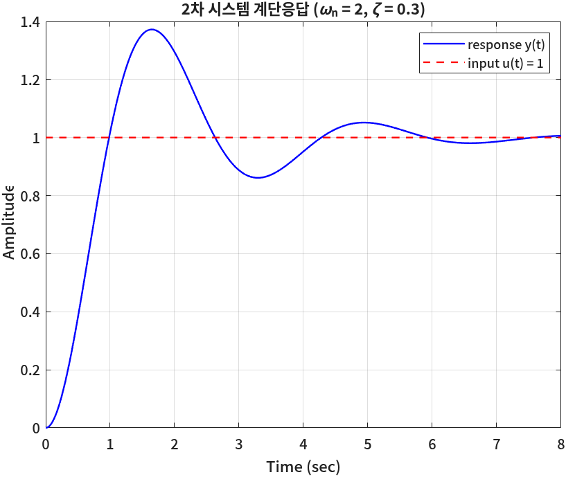
코드에서 짚을 줄이 셋 있다.
exp(-zeta*wn*t) .* sin(wd*t + phi)— 두 벡터를 원소별로 곱했다. 2회의 ⚠️ 그대로, 여기서*를 쓰면 차원 오류가 난다. 반면zeta*wn*t는 숫자 × 숫자 × 벡터라서 점이 필요 없다.ones(size(t))—t와 같은 크기의, 원소가 전부 1인 벡터. 단위계단 입력 \(u(t) = 1\)을 그래프에 같이 그리려고 만들었다. 4회에서도 같은 줄로 입력을 만든다.title('… (\omega_n = 2, \zeta = 0.3)')— 제목·축 이름·범례의 글자 안에서\omega,\zeta,_n을 쓰면 그리스 문자와 아래 첨자로 바뀐다(TeX 표기).
🆕 이 코드에서 처음 나오는 것
- acos(x)
- 역코사인 \(\cos^{-1}x\) (결과는 라디안). 여기서는 위상 \(\phi = \cos^{-1}\zeta\)를 구했다.
- '\omega_n' · '\zeta' (그래프 글자 안)
- 그래프의 글자에 쓰는 TeX 표기. 여기서는 제목에 \(\omega_n\), \(\zeta\)를 넣었다. 같은 글자를
sprintf로 만들 때는 역슬래시를 두 번('\\zeta') 쓴다(⑦절).
그래프에서 값 읽기 — max
그래프를 보고 「대략 1.4쯤 올라간다」고 말할 수 있다. 그 값을 숫자로 뽑으려면 데이터 벡터 y에서 가장 큰 값을 찾으면 된다.
그 값이 어느 시간에 나왔는지도 함께 찾는다.
% 그래프에서 읽을 값을 숫자로 구하기
[ymax, idx] = max(y)
tpeak = t(idx)
% 교재의 식과 비교
Tp = pi / wd
OS = exp(-zeta*pi/sqrt(1 - zeta^2)) * 100
fprintf('최대초과: 그래프 %.2f%%, 식 %.2f%%\n', (ymax - 1)*100, OS)명령 창 출력
ymax =
1.3723
idx =
166
tpeak =
1.6500
Tp =
1.6466
OS =
37.2326
최대초과: 그래프 37.23%, 식 37.23%
[ymax, idx] = max(y)는 가장 큰 값 1.3723과 그 값의 번호 166을 돌려준다.
시간 벡터에서 같은 번호를 꺼내면 t(166) = 1.65초 — 꼭대기에 닿은 시간이다.
(시간이 0부터 0.01 간격이라 166번째 점은 \(0.01 \times 165 = 1.65\)초다.)
📐 이론과 잇기 — 첨두시간과 최대초과
\(y(t)\)를 미분해서 0이 되는 첫 시간이 첨두시간이다. 미분하면 \(\dot y(t) = \dfrac{\omega_n}{\sqrt{1-\zeta^2}} e^{-\zeta\omega_n t}\sin\omega_d t\)이므로 \(\omega_d t = \pi\)에서 처음 0이 된다.
$$T_p = \frac{\pi}{\omega_d} = \frac{\pi}{1.9079} = 1.6466\ \text{s}$$그 순간 \(\sin(\pi + \phi) = -\sin\phi = -\sqrt{1-\zeta^2}\)이므로 \(y(T_p) = 1 + e^{-\zeta\omega_n T_p}\)이고, 넘어선 비율은
$$\%OS = e^{-\zeta\pi/\sqrt{1-\zeta^2}} \times 100 = e^{-0.3\pi/0.9539}\times100 = e^{-0.9880}\times100 = 37.23\%$$
MATLAB 출력의 Tp = 1.6466, OS = 37.2326이 이 값이다. 그래프에서 읽은 첨두시간 1.65초는
시간 간격 0.01초 안에서 식의 1.6466초와 같고, 최대초과는 둘 다 37.23%다.
\(\%OS\)가 \(\zeta\)만의 함수라는 점(\(\omega_n\)이 식에 없다)을 기억해 둔다 — 6회에서 「최대초과 20% 이하」를 \(\zeta\)에 대한 조건으로 바꾸는 근거다.
🆕 이 코드에서 처음 나오는 것
- [m, idx] = max(v)
- 벡터의 최댓값과 그 위치(번호). 여기서는 응답의 꼭대기 값과, 그 번호로 첨두시간
t(idx)를 찾았다. 최솟값은min.
⑦ 반복문 — for
제동비가 응답 모양을 어떻게 바꾸는지 보려면 \(\zeta\)를 여러 값으로 바꿔 가며 같은 계산을 되풀이해야 한다. ⑥절의 코드를 다섯 번 복사해 붙이는 대신 반복문을 쓴다.
for k = 1:5
% k = 1, 2, 3, 4, 5 차례로 이 안을 실행한다
end
for 변수 = 벡터는 벡터의 원소를 하나씩 변수에 넣고 end까지를 실행한다.
아래 코드에서는 제동비 다섯 개를 벡터 zetas에 담고, 번호 k로 하나씩 꺼낸다.
clc; clear; close all
% 제동비를 바꿔 가며 계단응답 여러 개를 한 그래프에
wn = 2;
t = 0:0.01:8;
zetas = [0.1 0.3 0.5 0.7 0.9];
hold on
for k = 1:length(zetas)
zeta = zetas(k);
wd = wn*sqrt(1 - zeta^2);
phi = acos(zeta);
y = 1 - exp(-zeta*wn*t) .* sin(wd*t + phi) / sqrt(1 - zeta^2);
plot(t, y, 'DisplayName', sprintf('\\zeta = %.1f', zeta))
end
hold off
xlabel('Time (sec)')
ylabel('Amplitude')
title('제동비에 따른 2차 시스템 계단응답 (\omega_n = 2)')
legend
grid on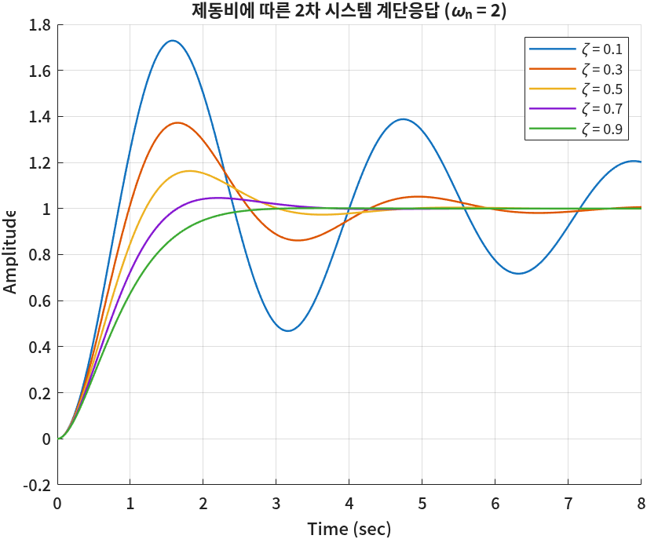
반복문 안의 plot이 매번 그림을 지우지 않는 것은 반복문 앞에 hold on을 걸었기 때문이다.
범례는 plot마다 'DisplayName'으로 이름을 붙여 두고, 마지막에 legend를 인자 없이 불러 그 이름들을 모았다.
이름은 sprintf('\\zeta = %.1f', zeta)로 만들었다 — sprintf 안에서 역슬래시는 \n 같은 특수 문자의 시작이라,
글자 \를 남기려면 \\로 두 번 쓴다. 그렇게 남은 \zeta를 legend가 그리스 문자로 바꾼다.
같은 반복문으로 그래프 대신 숫자를 뽑아 식과 비교해 본다.
% 같은 반복문으로 숫자만 뽑기
for k = 1:length(zetas)
zeta = zetas(k);
wd = wn*sqrt(1 - zeta^2);
phi = acos(zeta);
y = 1 - exp(-zeta*wn*t) .* sin(wd*t + phi) / sqrt(1 - zeta^2);
OS = exp(-zeta*pi/sqrt(1 - zeta^2)) * 100;
fprintf('zeta = %.1f : 그래프 최대초과 %.1f%%, 식 %.1f%%\n', zeta, (max(y) - 1)*100, OS)
end명령 창 출력
zeta = 0.1 : 그래프 최대초과 72.9%, 식 72.9%
zeta = 0.3 : 그래프 최대초과 37.2%, 식 37.2%
zeta = 0.5 : 그래프 최대초과 16.3%, 식 16.3%
zeta = 0.7 : 그래프 최대초과 4.6%, 식 4.6%
zeta = 0.9 : 그래프 최대초과 0.2%, 식 0.2%
다섯 줄 모두 그래프(max(y))와 식(\(e^{-\zeta\pi/\sqrt{1-\zeta^2}}\))이 소수점 첫째 자리까지 같다.
\(\zeta = 0.7\)에서 최대초과가 4.6%로 떨어지는 것이 보인다 — 설계에서 \(\zeta \approx 0.7\)을 자주 고르는 이유다.
🆕 이 코드에서 처음 나오는 것
- for k = 1:n … end
- k에 1부터 n까지 넣어 가며 안쪽을 반복. 여기서는 제동비 다섯 개마다 응답을 계산해 그렸다.
- plot(…, 'DisplayName', '이름')
- 곡선에 범례용 이름을 붙인다(이름-값 쌍). 여기서는 곡선마다
\zeta = 0.1같은 이름을 달았다. - legend (인자 없이)
- 각 곡선의
DisplayName으로 범례를 만든다. 반복문으로 그린 곡선의 범례를 달 때 편하다.
극점과 응답을 나란히 — subplot + for
2회에서 극점의 위치가 \(\zeta\), \(\omega_n\)을 담고 있다는 것을 봤다. 같은 \(\zeta\)의 극점(왼쪽)과 계단응답(오른쪽)을 같은 색으로 나란히 그려 본다.
한 반복 안에서 subplot으로 칸을 오가며 그린다.
clc; clear; close all
% 왼쪽: 극점 위치, 오른쪽: 계단응답 — 같은 색이 같은 제동비
wn = 2;
t = 0:0.01:8;
zetas = [0.2 0.5 0.8];
colors = 'rbk';
for k = 1:length(zetas)
zeta = zetas(k);
p = roots([1 2*zeta*wn wn^2]);
wd = wn*sqrt(1 - zeta^2);
y = 1 - exp(-zeta*wn*t) .* sin(wd*t + acos(zeta)) / sqrt(1 - zeta^2);
subplot(1,2,1)
hold on
plot(real(p), imag(p), [colors(k) 'x'], 'MarkerSize', 10, 'LineWidth', 2)
subplot(1,2,2)
hold on
plot(t, y, colors(k), 'DisplayName', sprintf('\\zeta = %.1f', zeta))
end
subplot(1,2,1)
axis equal
axis([-3 1 -2.5 2.5])
xlabel('Real'); ylabel('Imag')
title('극점 위치 (\omega_n = 2)')
grid on
subplot(1,2,2)
xlabel('Time (sec)'); ylabel('Amplitude')
title('계단응답')
legend
grid on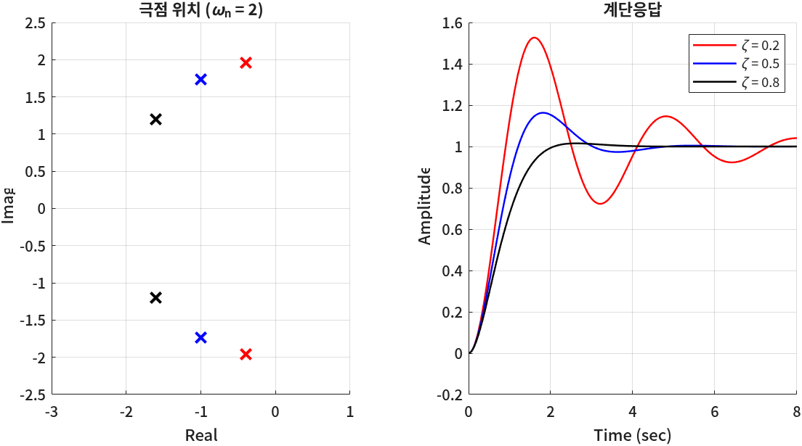
colors = 'rbk'는 색 글자 세 개짜리 문자 배열이고, colors(k)로 하나씩 꺼낸다.
[colors(k) 'x']는 2회에서 본 문자 배열 이어 붙이기라서 'rx', 'bx', 'kx'가 된다.
왼쪽 칸에 axis equal을 준 것은 가로·세로 눈금 간격을 같게 해서 「원점에서 같은 거리」가 원으로 보이게 하려는 것이다.
🆕 이 코드에서 처음 나오는 것
- plot(…, 'MarkerSize', 10, 'LineWidth', 2)
- 점 표시의 크기와 선 굵기를 정하는 이름-값 쌍. 여기서는 극점 x를 크고 굵게 찍었다.
- axis equal
- 가로·세로 단위 길이를 같게 한다. s 평면처럼 거리·각도가 뜻을 갖는 그림에 쓴다.
⑧ 그림 저장 — exportgraphics
과제 보고서에는 그래프를 넣어야 한다. 화면을 캡처해도 되지만, 해상도가 낮고 창 테두리가 따라온다.
그림 창을 그대로 그림 파일로 저장하는 함수가 exportgraphics다.
% 지금 그림 창을 보고서용 그림 파일로 저장
exportgraphics(gcf, 'zeta_compare.png', 'Resolution', 200)
명령 창에는 아무것도 찍히지 않는다. 대신 현재 폴더에 zeta_compare.png가 생긴다.
gcf는 「get current figure」 — 지금 골라져 있는 그림 창이다. 바로 위 ⑦절의 극점·응답 그림 창이 저장된다.
'Resolution', 200은 인치당 점 수(dpi)로, 보고서용으로는 150~300이면 충분하다.
파일 이름을 .pdf로 끝내면 확대해도 깨지지 않는 벡터 그림으로 저장된다.
🆕 이 코드에서 처음 나오는 것
- exportgraphics(fig, '파일이름.png', 'Resolution', dpi)
- 그림 창을 이미지(png·jpg)나 pdf로 저장한다. 여기서는 극점·응답 비교 그림을 200 dpi png로 저장했다.
- gcf
- 현재 그림 창. 여기서는 저장할 창을 가리키는 데 썼다. 비슷하게
gca는 현재 축이다.
🧪 실습 — 고유주파수를 바꾸면 응답은 어떻게 달라지나
이걸 해 보면 무엇을 알게 되나
⑦절에서는 \(\omega_n\)을 2로 두고 \(\zeta\)를 바꿨다. 이번에는 반대로 \(\zeta\)를 0.3으로 고정하고 \(\omega_n\)을 바꿔 본다. \(\%OS\) 식에 \(\omega_n\)이 없다는 것이 그래프에서 어떻게 보이는지 확인한다.
준비물: MATLAB, ⑦절 코드(b13 상자)를 붙여 넣은 스크립트 lab03.m
- (3분) ⑦절의 첫 코드를
lab03.m에 붙여 넣고 실행해 ⑦절 그림과 같은지 본다. - (5분)
zetas대신wns = [1 2 4]를 만들고, 반복문 안에서zeta = 0.3,wn = wns(k)가 되도록 고친다.DisplayName도'\\omega_n = %g'로 바꾼다. - (3분) 제목을 바꾸고 실행한다. 세 곡선의 꼭대기 높이와 꼭대기 시간을 비교한다.
- (5분) 아래쪽에 ⑦절의 숫자 반복문(
b14)을 같은 방식으로 고쳐, 세 경우의max(y)와 첨두시간t(idx)를fprintf로 찍는다. - (2분)
exportgraphics로 그림을lab03.png로 저장하고, 현재 폴더 창에 파일이 생겼는지 본다.
이렇게 되면 성공이다: 세 곡선이 같은 높이(약 1.37)까지 올라가는데, \(\omega_n\)이 클수록 더 빨리 올라간다. 첨두시간은 \(\omega_n\)에 반비례해서 \(\omega_n = 1, 2, 4\)일 때 약 3.29, 1.65, 0.82초로 찍힌다(\(T_p = \pi/(\omega_n\sqrt{1-0.09})\)).
📝 연습문제
답은 싣지 않는다. 그래프를 그리기 전에 어떤 모양이 나올지 먼저 손으로 그려 보고 비교한다.
- \(0 \le t \le 6\)에서 \(y_1 = e^{-t}\), \(y_2 = e^{-2t}\), \(y_3 = e^{-t} - e^{-2t}\)를 한 그래프에 각각 파란 실선, 빨간 파선, 검은 점선으로 그리고 범례·축 이름·눈금선을 넣으시오. (\(y_3\)는 2회 ⑥절에서 구한 역라플라스 변환 결과다.)
- 위 문제를
subplot(3,1,k)로 세 칸에 나눠 그리시오. 세 칸의 세로축 범위가 서로 다르게 잡히는 것을 확인하고,axis로 같게 맞추시오. - ⑦절 코드에서
zetas에 1.0을 넣으면 어떤 경고나 이상한 그래프가 나오는가? 식의 어느 부분 때문인지 설명하시오. - \(\zeta = 0.5\), \(\omega_n = 3\)인 응답에서 처음으로 0.9를 넘는 시간을 찾으시오. (힌트:
y > 0.9는 0과 1로 된 벡터를 만든다.find함수를 찾아보고, 쓴다면 무엇을 하는 함수인지 한 줄로 적으시오.)
✅ 점검
조금 더 알아두면
subplot 대신 tiledlayout
MATLAB R2019b부터 tiledlayout(2,2)와 nexttile로 칸을 나누는 방법이 생겼다. 칸 사이 여백을 줄이거나 칸 하나를 두 칸 크기로 쓰는 것이 쉽다.
이 자료는 subplot을 쓴다. 과제에서 tiledlayout을 쓰고 싶으면 무엇을 하는 함수인지 정리해서 쓰면 된다.
로그 눈금 — semilogx · loglog
가로축이 주파수처럼 0.1에서 100까지 넓게 퍼진 데이터는 가로축을 로그 눈금으로 그려야 한다. semilogx(x, y)는 사용법이 plot과 같고 가로축만 로그다.
8회 보드 선도에서 이 함수로 이득·위상을 직접 그린다.
그림 창에서 마우스로 값 읽기 — 데이터 팁
그림 창의 곡선 위를 클릭하면 그 점의 좌표가 작은 상자(데이터 팁)로 뜬다. ⑥절의 꼭대기를 클릭하면 X 1.65, Y 1.3723이 보인다.
빠르게 확인할 때는 편하지만 클릭 위치에 따라 값이 조금씩 달라지므로, 보고서의 숫자는 오늘처럼 max 같은 함수로 뽑는 편이 정확하다.
6회에서 근궤적 위의 점을 클릭해 이득 \(K\)를 읽는 데 다시 쓴다.